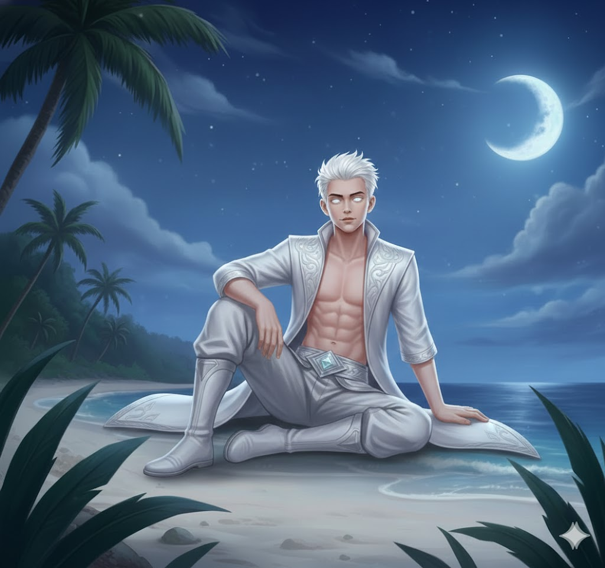
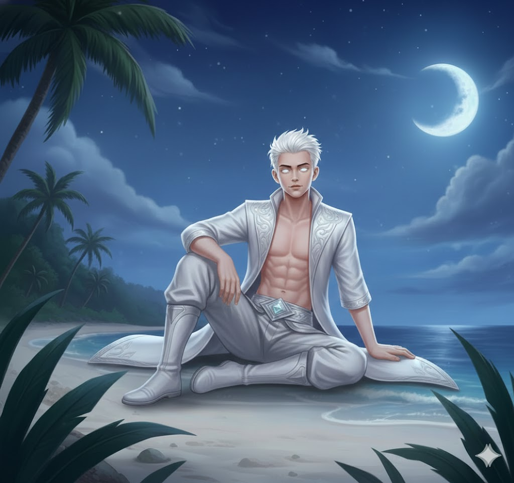

SKIN
MAHSURI
 

STATISTIK & STATUS NYAWA DAN TENAGA
- Serangan 5
- Penguasaan 6
- Kesukaran 8
- Kekebalan 7
- HP = 2650 +215
- Mana = 480 +60
BIODATA
- Nama Pahlawan : MAHSURI
- Nama Sebenar : Adam
- Gelaran : SUMPAHAN DARAH PUTIH LANGKAWI
- Umur : 16 Tahun
- Number Pahlawan : 010
- Jenis Pahlawan : PENGALUR
- Makhluk : Manusia
- Bangsa : Melayu
- Negeri Asal : Tasik Dayang Bunting, Langkawi,Kedah
- Pekerjaan : Pelajar Sekolah Menengah
- Tinggi : 160 cm
- Berat : 45 Kg
SKILL
-
PASIF: SUMPAH TERAKHIR
- (Magic, True Damage, Debuff)
- Apabila Mahsuri mati, darah putihnya akan keluar dan pergi menyerang musuh yang membunuhnya, menyebabkan Magic Damage (200 + 15% Max HP Mahsuri) dan Slow 30% selama 2 saat.
- Jika musuh mempunyai Perisai, ia akan musnah sepenuhnya.
- Musuh yang terkena akan kehilangan 50 mana (jika ada).
-
SKILL 1: IKATAN DARAH PUTIH
- (Magic, Heal, Buff)
- Level: 1-4
- Mahsuri mengikat dirinya kepada seorang sekutu dalam jarak 6 unit dengan darah putih.
- Jika tiada target, ia akan menyembuhkan diri sendiri.
- Ikatan akan terputus jika jarak lebih dari 7 unit.
- Mahsuri dan sekutu yang terikat mendapat +50% Regen HP selama 3 saat.
- Damage / Heal:
- Level 1: 150 HP per saat
- Level 2: 225 HP per saat
- Level 3: 300 HP per saat
- Level 4: 375 HP per saat
- Cooldown: 12s → 10s → 8s → 6s
- Mana Cost: 100 → 110 → 120 → 130
-
SKILL 2: TOMBAK DARAH PUTIH
- (Magic, AOE, CC)
- Level: 1-4
- Mahsuri menghasilkan tombak dari darah putih dan menjatuhkannya ke atas musuh dalam radius 5 unit.
- Maksimum 3 tombak boleh muncul.
- Setiap tombak menyebabkan stun selama 0.5s jika mengenai musuh.
- Damage Skill:
- Level 1: 200 Magic Damage per tombak
- Level 2: 250 Magic Damage per tombak
- Level 3: 300 Magic Damage per tombak
- Level 4: 350 Magic Damage per tombak
- Cooldown: 10s → 9s → 8s → 7s
- Mana Cost: 80 → 90 → 100 → 110
-
SKILL 3: DARAH PUTIH PELINDUNG
- (Magic, Shield, Buff)
- Level: 1-4
- Mahsuri memberi perisai kepada 3 sekutu terdekat dalam radius 4 unit, mengurangkan
- Magic Damage yang diterima.Efek Perisai:
- Level 1: 300 Shield HP (Mengurangkan 15% Magic Damage)
- Level 2: 400 Shield HP (Mengurangkan 20% Magic Damage)
- Level 3: 500 Shield HP (Mengurangkan 25% Magic Damage)
- Level 4: 600 Shield HP (Mengurangkan 30% Magic Damage)
- Perisai bertahan selama 4 saat atau sehingga habis.
- Cooldown: 14s → 12s → 10s → 8s
- Mana Cost: 120 → 130 → 140 → 150
-
 ULTI: SUMPAHAN MAHSURI
ULTI: SUMPAHAN MAHSURI- (Magic, AOE, Heal, Lifesteal)
- Level: 1-3
- Mahsuri membentuk kawasan darah putih dalam radius 6 unit, menyebabkan Magic Damage setiap saat kepada musuh dalam kawasan.
- Setiap damage yang diterima oleh musuh dalam kawasan ini akan menyembuhkan sekutu dalam kawasan.
- Mahsuri boleh bergerak sambil skill ini aktif.
- Level 1: 150 Magic Damage setiap saat, menyembuhkan 50% daripada jumlah damage yang dikenakan.
- Level 2: 200 Magic Damage setiap saat, menyembuhkan 75% daripada jumlah damage yang dikenakan.
- Level 3: 250 Magic Damage setiap saat, menyembuhkan 100% daripada jumlah damage yang dikenakan.
- Skill berlangsung selama 5 saat.
- Cooldown: 60s → 50s → 40s
- Mana Cost: 200 → 250 → 300
PERSONALITI
- Prihatin dan berjiwa penyelamat
- Tenang tetapi tegas dalam keputusan
- Mengutamakan keselamatan sekutu
- Pantang melihat ketidakadilan
HIKAYAT
Maka tersebutlah sebuah pulau bernama Langkawi, tempat yang indah lagi permai, dihiasi pantai putih bersih dan laut yang biru berkilau bak permata berkilauan di bawah cahaya mentari. Di pulau itu, tinggallah seorang remaja bernama Adam, seorang pemuda yang gagah lagi cekal, anak kepada keluarga pembawa pelancong. Hidup mereka penuh kesederhanaan, namun hati mereka kaya dengan budi bahasa. Adam sering membawa bot bersama keluarganya, memperkenalkan keelokan pulau itu kepada pengunjung dari serata tempat.
Namun, pada suatu hari yang penuh duka, Adam telah hilang di laut. Tiada sesiapa tahu ke mana dia menghilang, walhal Adam terkenal dengan kebolehannya berenang di laut dalam, menyelam tanpa alat, dan menjinakkan arus yang deras. Seminggu sudah berlalu, dan keluarga Adam menangisi kehilangannya, bak malam tanpa bintang, kelam dan penuh resah.
Maka cerita ini membawa kita kembali ke zaman silam, ke tanah yang sama, ketika Langkawi dihuni oleh seorang wanita bernama Mahsuri, isteri kepada pahlawan bernama Wan Derus. Mahsuri, yang cantiknya bak bidadari, kini hidup sendiri tatkala suaminya berjuang di medan perang. Hatinya penuh kerinduan, namun lebih dari itu, ia dihuni kehampaan.
"Aduhai, alangkah baiknya jika hamba dikurniakan seorang anak. Tidaklah sunyi hamba menanti kembalinya suami," bisik Mahsuri di tengah malam yang sepi.
Tiba-tiba, muncullah seorang wanita tua, bongkok tiga, dengan tongkat yang menghentak bumi, memecah keheningan malam. "Apakah keinginanmu, wahai Mahsuri?" tanya wanita tua itu, suaranya serak namun menusuk ke telinga.
Tanpa berfikir panjang, Mahsuri berkata, "Hamba ingin seorang anak, agar tidak kesepian."
Wanita tua itu mengukir senyuman misteri, lalu menyentuh perut Mahsuri. "Hajatmu akan tertunai, wahai Mahsuri. Namun ingatlah, setiap kurniaan ada balasannya." Usai berkata begitu, wanita tua itu pun menghilang dalam bayang malam.
Beberapa bulan berlalu, dan Mahsuri mendapati dirinya berbadan dua. Tatkala suaminya kembali, Wan Derus terkejut bercampur gembira, namun kegembiraan itu tidak lama. Fitnah mula melanda, bak angin ribut yang menyapu segenap kampung. Penduduk menuduh Mahsuri curang, mengatakan anak dalam kandungannya bukan milik Wan Derus.
Orang kampung, yang dibutakan oleh prasangka, mengheret Mahsuri ke tengah padang, diikat pada sebatang pokok besar. Mahsuri merayu, memohon keadilan, namun mereka tiada belas. Tombak biasa tidak mampu melukainya, maka mereka menggunakan tombak pusaka milik suaminya sendiri.
Dengan darah putih yang mengalir dari tubuhnya, Mahsuri menjerit, "Sumpahku kepada pulau ini! Langkawi tidak akan aman selama tujuh keturunan." Dan saat itu, Mahsuri menghembuskan nafas terakhir, meninggalkan sumpahan yang menghantui Langkawi selama tujuh keturunan.
Di masa kini, Adam yang hilang akhirnya ditemui di tepi pantai, terbaring lemah namun masih bernyawa. Keluarganya bersyukur, memeluknya erat, membawa pulang anak yang mereka rindui. Namun, Adam berubah sejak kejadian itu. Dia bermimpi bertemu Mahsuri, yang hadir dalam cahaya terang.
"Bangunlah, anakku," ujar Mahsuri, suaranya lembut bak bayu malam. "Kau pewaris yang terpilih. Gunakanlah kuasa ini untuk melindungi tanah airmu. Sumpahan tujuh keturunan telah tamat, namun ia kini menjadi berkat. Gunakanlah ia dengan bijaksana."
Adam tersedar dari mimpinya, tubuhnya terasa segar namun dipenuhi tanda tanya. Dalam diam, dia mendapati dirinya memiliki kekuatan luar biasa. Namun, Adam merahsiakan hal itu, kerana dia yakin bahawa suatu hari nanti, petunjuk Mahsuri dalam mimpinya akan menjadi kenyataan.
Setelah kejadian aneh di mana Adam ditemui seminggu kemudian di tepi pantai tanpa penjelasan yang jelas, dia mula merasakan sesuatu yang ganjil dalam dirinya. Pada mulanya, dia menganggap dirinya hanya keletihan akibat kejadian lemas. Namun, satu malam ketika dia membersihkan luka kecil di tangannya, darah yang mengalir dari lukanya bukanlah merah seperti biasa, tetapi putih. Darah itu bercahaya lembut, seakan-akan hidup, dan dalam sekelip mata, luka itu sembuh sepenuhnya tanpa meninggalkan parut.
Adam mula menyedari bahawa ini bukan perkara biasa. Dia teringat akan mimpi di mana seorang wanita bercahaya, yang dia yakini Mahsuri, menyeru agar dia bangun dan menggunakan "anugerah" itu untuk melindungi negara. Sejak saat itu, dia memutuskan untuk memahami kuasa yang kini mengalir dalam dirinya.
Adam mula melatih dirinya secara rahsia di kawasan hutan berhampiran rumahnya. Dia bereksperimen dengan kuasa darah putih, mendapati bahawa:
Penyembuhan: Dia dapat menyembuhkan luka kecil pada tubuhnya sendiri dan binatang di sekelilingnya. Semakin dia fokus, semakin cepat penyembuhan itu berlaku.
Perisai Aura: Dengan memusatkan tenaga, dia dapat mencipta aura pelindung di sekelilingnya yang mampu menangkis serangan fizikal tertentu.
Tenaga Sukma: Dalam keadaan terdesak, darah putihnya dapat memberikannya kekuatan luar biasa untuk bertahan lebih lama daripada manusia biasa.
Adam juga mempelajari seni mempertahankan diri dan memperkuat tubuhnya secara fizikal untuk memastikan dia mampu bertahan jika terpaksa menggunakan kuasanya. Dia membawa busur dan anak panah untuk berlatih, mengambil inspirasi daripada Mahsuri sebagai simbol keadilan.
Satu petang, ketika Adam sedang berlatih menyembuhkan seekor burung yang cedera, ibunya secara tidak sengaja melihat dari jauh. Hatinya bercampur antara kagum dan risau. Setelah pulang, ibunya bertanya dengan lembut apa yang sebenarnya berlaku kepada Adam sejak dia ditemukan semula. Adam akhirnya menceritakan segala-galanya.
Ibunya mendengar dengan penuh teliti, menahan air mata apabila mendengar nama Mahsuri disebut. “Adam,” katanya lembut, “jika benar ini anugerah dari Mahsuri, gunakanlah ia untuk kebaikan. Jangan biarkan ia menjadi beban, tetapi jadikan ia pedoman.”
Adam bersungguh-sungguh berkata kepada ibunya, “Mak, kalau apa-apa terjadi pada Adam, janganlah sesiapa tahu Adam yang lakukan ini semua. Adam mahu dikenali sebagai 'Mahsuri'. Nama itu melambangkan keadilan, kesucian, dan keberanian. Adam mahu menjaga negara dengan cara yang baik, seperti Mahsuri menjaga maruahnya hingga ke akhir hayat.”
Ibunya tersenyum penuh bangga, namun hatinya tetap berat memikirkan apa yang akan berlaku pada anaknya. Dia berjanji akan merahsiakan perkara itu dan terus mendoakan keselamatan Adam.
Walaupun merahsiakan kuasanya, Adam mulai merasai tanggungjawab besar untuk menjaga Langkawi dan negaranya. Dia menggunakan kebolehannya untuk membantu orang dalam diam. Ketika ada kecemasan di kampung atau bencana kecil seperti ribut, Adam akan muncul secara senyap, memastikan semua orang selamat tanpa ada yang tahu.
Setiap malam, sebelum tidur, dia memandang langit dan berkata dalam hatinya, “Mahsuri, sumpahanmu sudah berakhir. Kini, anugerahmu adalah tanggungjawabku.”